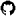

Blot
This is some algorithmic art I made for a Hackclub challenge.
It is essentially a fully customizeable neon city, with cars, streets, and skyscrapers. The code is well commented (at least for the variables), so I don't really feel a need to explain it here.
It is based off of the magnificent shader art of city lights by martin
Go Back